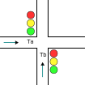
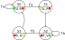

ELO211 Sistemas Digitales
Circuitos secuenciales
Marie González-Inostroza
Recordemos: Semáforo inteligente
Un semáforo controla el cruce entre las calles A y B. Para esto, cuenta con los sensores Ta y Tb que indican con un 1 cuando pasa un auto. El semáforo permanecerá en verde para una calle hasta que no pase ningún auto por ella.

Recordemos: Semáforo inteligente (Moore)

Recordemos: Semáforo inteligente (Mealy)

Circuito secuencial con Máquina de Moore
Circuito secuencial con Máquina de Mealy

Ejemplo: opciones de codificación de estados de la máquina de Moore
| State | C. binario | C. Gray | C. One-Hot | C. One-Cold |
|---|---|---|---|---|
| S0 | 00 | 00 | 0001 |
1110 |
| S1 | 01 | 01 | 0010 |
1101 |
| S2 | 10 |
11 | 0100 |
1011 |
| S3 | 11 | 10 | 1000 | 0111 |
Se debe elegir una estrategia de codificación. Utilizaremos un Flip-Flop por cada bit de estado.
Tablas de estados, transiciones y salidas máquina de Moore
| S(t) | Cod. |
|---|---|
| S0 | 00 |
| S1 | 01 |
| S2 | 10 |
| S3 | 11 |
| State | LA | LB |
|---|---|---|
| S0 | 001 | 100 |
| S1 | 010 | 100 |
| S2 | 100 | 001 |
| S3 | 100 | 010 |
| S(t) | In(TATB) | S(t+1) |
|---|---|---|
| S0 | 1X | S0 |
| S0 | 0X | S1 |
| S1 | XX | S2 |
| S2 | X1 | S2 |
| S2 | X0 | S3 |
| S3 | XX | S0 |
Tabla de estados y transiciones máquina de Moore

| St | In(Ta,Tb) |
St+1 | Out(La,Lb) |
|---|---|---|---|
| 00 | 0X |
01 |
001100 |
| 00 | 1X | 00 | 001100 |
| 01 | XX | 10 |
010100 |
| 10 | X0 | 11 |
100001 |
| 10 |
X1 | 10 |
100001 |
| 11 | XX | 00 | 100010 |
Obtener expresiones a partir de la tablas de salidas de una máquina de Moore
| State | Código | LA | LB |
|---|---|---|---|
| S0 | 00 | 001 | 100 |
| S1 | 01 | 010 | 100 |
| S2 | 10 | 100 | 001 |
| S3 | 11 | 100 | 010 |
Obtener expresiones desde la tabla de transiciones de una máquina de Moore
| St | In(Ta,Tb) |
St+1 | Out(La,Lb) |
|---|---|---|---|
| 00 | 0X |
01 |
001100 |
| 00 | 1X | 00 | 001100 |
| 01 | XX | 10 |
010100 |
| 10 | X0 | 11 |
100001 |
| 10 |
X1 | 10 |
100001 |
| 11 | XX | 00 | 100010 |
Circuito secuencial con Máquina de Moore
Tabla de estados y transiciones máquina de Mealy
| St | In(Ta,Tb) |
St+1 | Out(La,Lb) |
|---|---|---|---|
| 0 | 0X |
1 |
010100 |
| 0 | 1X | 0 | 001100 |
| 1 | X0 |
0 |
100001 |
| 1 | X1 | 1 | 100010 |
Ej: Síntesis de Máquina de Mealy
| St |
In(Ta,Tb) |
St+1 | Out(La,Lb) |
|---|---|---|---|
| 0 | 0X |
1 |
010100 |
| 0 | 1X | 0 | 001100 |
| 1 | X0 |
0 |
100001 |
| 1 | X1 | 1 | 100010 |
Ej: Síntesis de Máquina de Mealy
| St |
In(Ta,Tb) |
St+1 | Out(La,Lb) |
|---|---|---|---|
| 0 | 0X |
1 |
010100 |
| 0 | 1X | 0 | 001100 |
| 1 | X0 |
0 |
100001 |
| 1 | X1 | 1 | 100010 |
Ej: Síntesis de Máquina de Mealy
| St |
In(Ta,Tb) |
St+1 | Out(La,Lb) |
|---|---|---|---|
| 0 | 0X |
1 |
010100 |
| 0 | 1X | 0 | 001100 |
| 1 | X0 |
0 |
100001 |
| 1 | X1 | 1 | 100010 |
Circuito secuencial con Máquina de Mealy
Resumen metodología de diseño con FSMs
- Identificar entradas y salidas del sistema
- Definir modelo a utilizar (Mealy o Moore) según conveniencia del problema
- Definir estados a utilizar y decidir si se puede factorizar la máquina
- Realizar diagrama de transiciones de estados
- Realizar tabla de codificación de estados
- Realizar tabla de transiciones
- Para Moore: realizar tabla de estados y tabla de salidas
- Para Mealy: realizar tabla de estados y salidas
- Obtener expresión booleana que corresponda a cada FF y cada salida mediante mapa de Karnaugh, minitérminos, maxitérminos u otro método.
- Dibujar esquemático correspondiente.